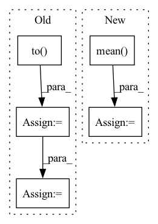

Pattern ID :58

Before Change
default_psnrs = 10 * torch.log10(factor**2 / mse_per_example)
// Align by homography:
breakpoint()
registrator = ImageRegistrator("similarity").to(ref_batch.device)
homography = registrator.register(ref_batch.detach(), img_batch.detach()).to(ref_batch.device)
breakpoint()
warped_imgs = homography_warp(img_batch, homography, ref_batch.shape[-2:])
// Compute new PSNR:
mse_per_example = ((warped_imgs.detach() - ref_batch)**2).view(B, -1).mean(dim=1)
registered_psnrs = 10 * torch.log10(factor**2 / mse_per_example)
After Change
homography = registrator.register(img, ref)
warped_img = registrator.warp_src_into_dst(img)
// Compute new PSNR:
mse = ((warped_img.detach() - ref_batch)**2).mean()
registered_psnrs += [10 * torch.log10(factor**2 / mse)]
// Return best of default and warped PSNR:
return torch.stack([torch.stack(default_psnrs), torch.stack(registered_psnrs)]).max(dim=0)[0].mean()
In pattern: SUPERPATTERN
Frequency: 3
Non-data size: 5
Instances
Fragment ID: 990223
Project Name: jonasgeiping/breaching
Commit Name: 6b4ffc1d9faebf9b2f809f69b0ed4a9af670db47
Time: 2021-11-29
Author: jonas.geiping@googlemail.com
File Name: breaching/analysis/metrics.py
M Class Name: AnonimousClass
N Class Name: AnonimousClass
M Method Name: _registered_psnr_compute_kornia(3)
N Method Name: _registered_psnr_compute_kornia(3)
M Parent Class:
N Parent Class:
M File Name: breaching/analysis/metrics.py
N File Name: breaching/analysis/metrics.py
M Start Line: 80
M End Line: 94
N Start Line: 81
N End Line: 99
'>
Before Change
//epochの最後のイテレーションはミニバッチの数が少なくなる
mini_batch_size = imgs.size()[0]
label_real = torch.full((mini_batch_size,),1).to(device)
label_fake = torch.full((mini_batch_size,),0).to(device)
//真の画像を判定
d_out_real = D(imgs)
//偽の画像を生成して判定
input_z = torch.randn(mini_batch_size,z_dim).to(device)
input_z = input_z.view(input_z.size(0),input_z.size(1),1,1)
fake_images = G(input_z)
d_out_fake = D(fake_images)
//誤差の計算
d_loss_real = criterion(d_out_real.view(-1),label_real)
d_loss_fake = criterion(d_out_fake.view(-1),label_fake)
d_loss = d_loss_real + d_loss_fake
//誤差を伝搬
g_optimizer.zero_grad()
After Change
d_out_fake,_,_ = D(fake_images)
//誤差の計算
//g_loss = criterion(d_out_fake.view(-1),label_real)
g_loss =- d_out_fake.mean()
//誤差を伝搬
g_optimizer.zero_grad()
d_optimizer.zero_grad()
g_loss.backward()
'>
Fragment ID: 990014
Project Name: zassou65535/image_generator
Commit Name: 0d1f9d59248bbe59037827d4a2f017e6c6b20344
Time: 2020-02-06
Author: nakamura.k.bv@m.titech.ac.jp
File Name: GAN.py
M Class Name: AnonimousClass
N Class Name: AnonimousClass
M Method Name: train_model(4)
N Method Name: train_model(4)
M Parent Class:
N Parent Class:
M File Name: GAN.py
N File Name: GAN.py
M Start Line: 31
M End Line: 108
N Start Line: 83
N End Line: 111
'>
Before Change
// resample the data
if (n % self.resample.resample_every == 0) or (n == nepoch-1):
if self.resample.resample_from_last:
pos = pos.clone().detach().to(self.device)
else:
pos = None
pos = self.sample(
pos=pos, ntherm=self.resample.ntherm, with_tqdm=False)
self.dataloader.dataset.data = pos
if self.task == "geo_opt":
self.wf.update_mo_coeffs()
After Change
self.opt.step(lpos)
eloc = self.opt.eloc
cumulative_loss += torch.mean(eloc)
if cumulative_loss < min_loss:
min_loss = self.save_checkpoint(
n, cumulative_loss, self.save_model)
'>
Fragment ID: 990168
Project Name: nlesc-jcer/qmctorch
Commit Name: 9f40f526749f6a91afacd7fa260c5e0c7e934715
Time: 2020-02-07
Author: nicolas.gm.renaud@gmail.com
File Name: deepqmc/solver/solver_orbital.py
M Class Name: SolverOrbital
N Class Name: SolverOrbital
M Method Name: run(5)
N Method Name: run(5)
M Parent Class: SolverBase
N Parent Class: SolverBase
M File Name: deepqmc/solver/solver_orbital.py
N File Name: deepqmc/solver/solver_orbital.py
M Start Line: 94
M End Line: 182
N Start Line: 94
N End Line: 179